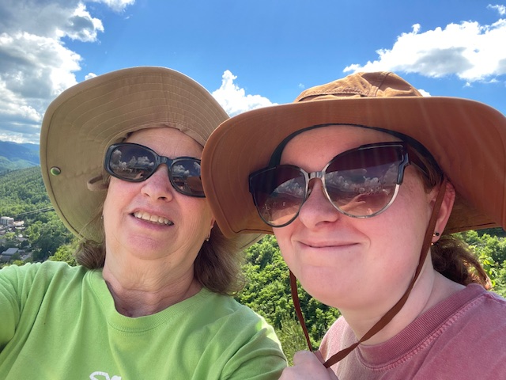

Me and my mom up in the mountains of Gatlinburg, TN 2024
Personal Background: Grew up in North Carolina, moved three times from Porters Landing, Raleigh and finally Mint Hill and I have two dogs.
Professional Background: None.
Academic background: Got my AA degree at CPCC and now here at UNCC as a junior.
Programming/Software Background in this subject: I remember the basics of a little bit of HTML code back in highschool elective, though I do have some experience in Java programming.
Primary Computer Platform: I mostly use a Laptop for school and a Windows 11 desktop at home usually for gaming.
Courses I'm Taking & Why:
ITSC 2600 - Computer Science Program, Identity, Career - required for my major.
ITIS 3200 - Intro to Info Security & Priv - required for my major.
ITIS 3130 - Introduction to Human-Centered Computing - required for my major.
ITSC 2175 - Logic and Algorithms - required for my major.
ITIS 3135 - Web-Based Application Design and Development - was recommended by my adviser and seems like a cool class that goes along with my major.
Funny/Interesting item about yourself: I love painting and wood burning.